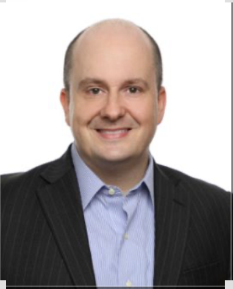

Background
- Master of Arts in Counseling, Northwestern University
- MBA
- Former Certified Public Accountant
- Over twenty years in finance and accounting before transitioning to counseling
Our focus is on helping high-performing professionals navigate burnout, sustained stress, and the impact these have on both performance and relationships.
Our approach is grounded in a practical understanding of high-responsibility environments. Before transitioning to counseling, Joseph spent over twenty years in finance and accounting, including experience as a Certified Public Accountant. He also holds an MBA and a Master of Arts in Counseling from Northwestern University.
That background shapes an approach that is direct, structured, and well aligned with how professionals think, operate, and make decisions. The goal is not simply to reduce stress, but to restore consistency, sustainable performance, and a stronger sense of control.
Our focus includes identifying the patterns that drive burnout and implementing changes that restore clarity, consistency, and sustainable performance.
Our approach integrates evidence-based methodologies including Cognitive Behavioral Therapy, Acceptance and Commitment Therapy, and psychodynamic therapy in a way that remains practical, relevant, and tailored to the individual.
Why the background matters
Professionals often want an approach that understands the realities of pressure, responsibility, and decision fatigue from the inside rather than only from the outside looking in.
How the tone stays different
Clear language, practical structure, and a focus on real-world application. The experience is designed to feel grounded, thoughtful, and relevant to demanding professional lives.
When burnout starts to affect both work and home life, early attention matters.
Our focus is on helping professionals regain traction before strain becomes more deeply entrenched in performance, relationships, or day-to-day life.
Schedule a Consultation Return Home